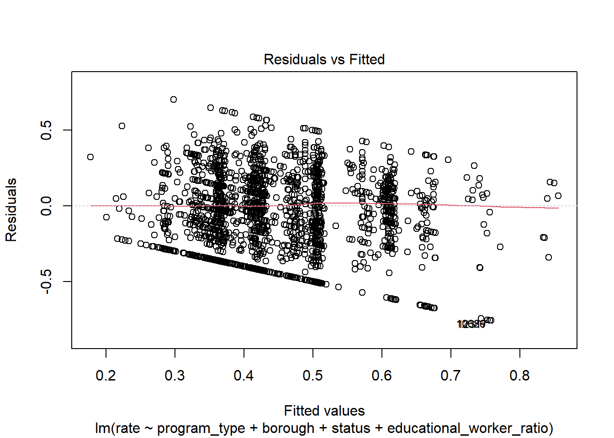
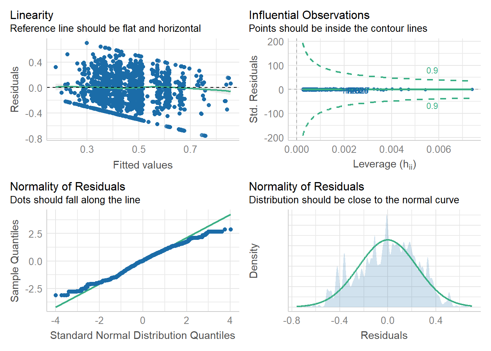
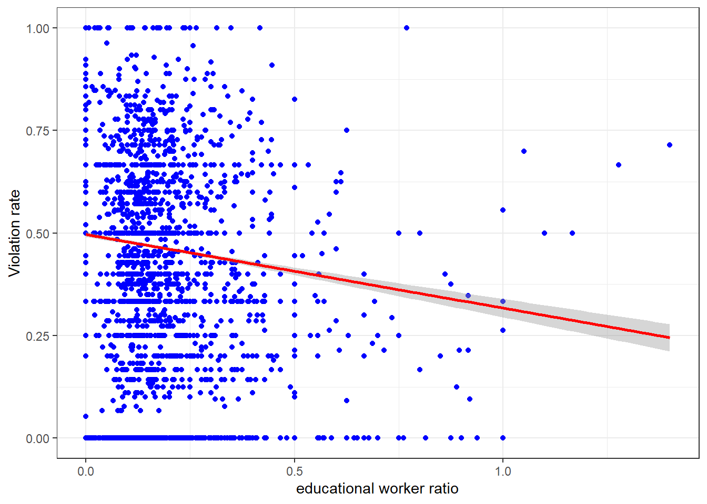
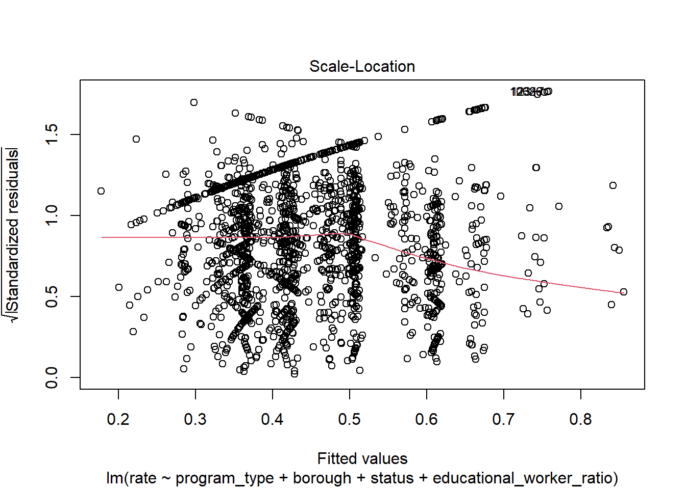
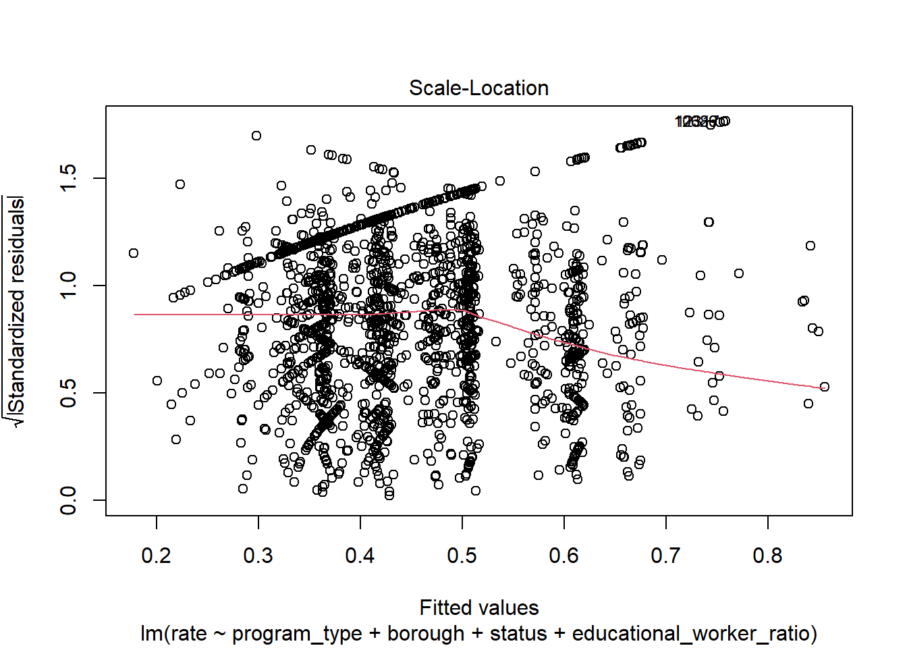
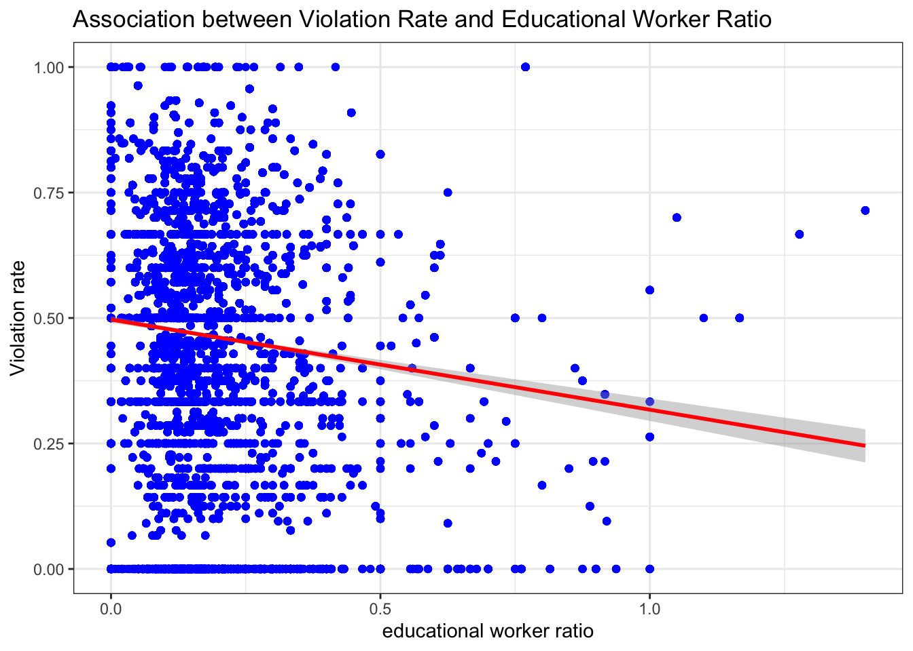

linear
2022-12-08
library(tidyverse)## Warning: package 'tidyverse' was built under R version 4.2.2## ── Attaching packages ─────────────────────────────────────── tidyverse 1.3.2 ──
## ✔ ggplot2 3.4.0 ✔ purrr 0.3.5
## ✔ tibble 3.1.8 ✔ dplyr 1.0.10
## ✔ tidyr 1.2.1 ✔ stringr 1.5.0
## ✔ readr 2.1.3 ✔ forcats 0.5.2## Warning: package 'ggplot2' was built under R version 4.2.2## Warning: package 'tidyr' was built under R version 4.2.2## Warning: package 'readr' was built under R version 4.2.2## Warning: package 'purrr' was built under R version 4.2.2## Warning: package 'stringr' was built under R version 4.2.2## ── Conflicts ────────────────────────────────────────── tidyverse_conflicts() ──
## ✖ dplyr::filter() masks stats::filter()
## ✖ dplyr::lag() masks stats::lag()library(dplyr)
library(rvest)##
## Attaching package: 'rvest'
##
## The following object is masked from 'package:readr':
##
## guess_encodinglibrary(purrr)
library(ggplot2)
library(modelr)## Warning: package 'modelr' was built under R version 4.2.2library(mgcv)## Warning: package 'mgcv' was built under R version 4.2.2## Loading required package: nlme## Warning: package 'nlme' was built under R version 4.2.2##
## Attaching package: 'nlme'
##
## The following object is masked from 'package:dplyr':
##
## collapse
##
## This is mgcv 1.8-41. For overview type 'help("mgcv-package")'.library(patchwork)
library(viridis)## Loading required package: viridisLitelibrary(fastDummies)## Warning: package 'fastDummies' was built under R version 4.2.2set.seed(1)Linear regression model
Model selection:
To explore the possible predictors contributing to the center-specific violation rate under each program type, we built a linear regression model. In this model, we focused on the violation rate and properties of each individual center.
To start with, we created a new variable named “rate”, which represents the violation rate for each center, by using violation category column. Here, rate = number of total violation for each center and program / number of total inspection for each center and program, during the past 3 year. This variable was used as the outcome of the linear regression.
## Rows: 26280 Columns: 34
## ── Column specification ────────────────────────────────────────────────────────
## Delimiter: ","
## chr (22): Center Name, Legal Name, Building, Street, Borough, Phone, Permit ...
## dbl (11): ZipCode, Permit Number, Building Identification Number, Violation ...
## num (1): Maximum Capacity
##
## ℹ Use `spec()` to retrieve the full column specification for this data.
## ℹ Specify the column types or set `show_col_types = FALSE` to quiet this message.Next, we selected several variables closely related to the properties of each center, as the potential predictors. After a thorough literature review, we chose variables based on a hypothesized structure for the factors underlying violation rate.
Linear model 1:
First, we fit a full model using program type, borough, status, educational worker ratio of center-specific distinct records.
# select distinct records and related variables of each center
center_distinct_df = center_specific_df %>%
select(center_name, program_type, borough, status, maximum_capacity, total_educational_workers, educational_worker_ratio, rate)
# fit the full model
full_lm = center_distinct_df %>%
lm(rate ~ program_type + borough + status + educational_worker_ratio, data = .)
full_lm %>%
broom::tidy() %>%
knitr::kable(digit = 3)| term | estimate | std.error | statistic | p.value |
|---|---|---|---|---|
| (Intercept) | 0.865 | 0.015 | 57.405 | 0.000 |
| program_typeinfant toddler | -0.028 | 0.011 | -2.425 | 0.015 |
| program_typepreschool | -0.004 | 0.009 | -0.446 | 0.656 |
| boroughBROOKLYN | -0.245 | 0.006 | -42.837 | 0.000 |
| boroughMANHATTAN | -0.186 | 0.006 | -30.364 | 0.000 |
| boroughQUEENS | -0.104 | 0.006 | -17.314 | 0.000 |
| boroughSTATEN ISLAND | -0.323 | 0.010 | -32.284 | 0.000 |
| statusExpired-In Renewal | -0.190 | 0.012 | -15.804 | 0.000 |
| statusPermitted | -0.239 | 0.011 | -21.128 | 0.000 |
| educational_worker_ratio | -0.083 | 0.015 | -5.342 | 0.000 |
Linear model 2:
Second, we also proposed an alternative model by using maximum_capacity, total educational workers and their interaction term as the predictors, instead of the educational worker ratio.
# fit an alternative model
alt_lm = center_distinct_df %>%
lm(rate ~ program_type + borough + status + maximum_capacity * total_educational_workers, data = .)
alt_lm %>%
broom::tidy() %>%
knitr::kable(digit = 3)| term | estimate | std.error | statistic | p.value |
|---|---|---|---|---|
| (Intercept) | 0.842 | 0.017 | 51.008 | 0.000 |
| program_typeinfant toddler | -0.041 | 0.012 | -3.432 | 0.001 |
| program_typepreschool | -0.006 | 0.011 | -0.558 | 0.577 |
| boroughBROOKLYN | -0.248 | 0.006 | -43.482 | 0.000 |
| boroughMANHATTAN | -0.187 | 0.006 | -30.447 | 0.000 |
| boroughQUEENS | -0.106 | 0.006 | -17.709 | 0.000 |
| boroughSTATEN ISLAND | -0.329 | 0.010 | -32.970 | 0.000 |
| statusExpired-In Renewal | -0.182 | 0.012 | -15.258 | 0.000 |
| statusPermitted | -0.231 | 0.011 | -20.568 | 0.000 |
| maximum_capacity | 0.000 | 0.000 | 2.558 | 0.011 |
| total_educational_workers | 0.000 | 0.000 | 0.191 | 0.849 |
| maximum_capacity:total_educational_workers | 0.000 | 0.000 | -0.648 | 0.517 |
After comparing these two models, we decided to keep full_lm model, due to its better goodness of fit and lower correlation among variables.
# assess multicollinearity by vif
library(performance) ## Warning: package 'performance' was built under R version 4.2.2##
## Attaching package: 'performance'## The following objects are masked from 'package:modelr':
##
## mae, mse, rmsecheck_collinearity(full_lm) # low correlation## # Check for Multicollinearity
##
## Low Correlation
##
## Term VIF VIF 95% CI Increased SE Tolerance
## program_type 1.78 [1.74, 1.82] 1.33 0.56
## borough 1.12 [1.10, 1.14] 1.06 0.89
## status 1.37 [1.35, 1.40] 1.17 0.73
## educational_worker_ratio 1.46 [1.43, 1.49] 1.21 0.69
## Tolerance 95% CI
## [0.55, 0.58]
## [0.88, 0.91]
## [0.71, 0.74]
## [0.67, 0.70]check_collinearity(alt_lm) # moderate correlation## # Check for Multicollinearity
##
## Low Correlation
##
## Term VIF VIF 95% CI Increased SE Tolerance Tolerance 95% CI
## program_type 1.95 [1.90, 1.99] 1.39 0.51 [0.50, 0.53]
## borough 1.12 [1.11, 1.14] 1.06 0.89 [0.87, 0.90]
## status 1.36 [1.34, 1.39] 1.17 0.73 [0.72, 0.75]
## maximum_capacity 1.70 [1.66, 1.73] 1.30 0.59 [0.58, 0.60]
##
## Moderate Correlation
##
## Term VIF VIF 95% CI Increased SE
## total_educational_workers 5.95 [5.78, 6.11] 2.44
## maximum_capacity:total_educational_workers 6.09 [5.92, 6.26] 2.47
## Tolerance Tolerance 95% CI
## 0.17 [0.16, 0.17]
## 0.16 [0.16, 0.17]Model diagnostics:
We checked the assumptions of the residuals by using 4 plots as follows. We found:
Linearity and homoscedasticity: from the Residuals vs Fitted plot, we can see residuals form a horizontal ‘band’ around zero and its value evenly dispersed around this reference line, suggesting the variance of our residuals should be constant across all fitted values.
Normality: from the Normal QQ plot, we can see a straight line with small departures if we don’t consider cases 12349 and 12318, suggesting the residuals follows a normal distribution.
Equal variance: again, from the Scale_Location plot, we can see a horizontal line with roughly equally spread points, suggesting the residuals are spread equally along the range of the predictors.
Outliers: from the Residuals vs Leverage plot, we can see no case is outside of the dashed line of Cook’s distance 0.5, suggesting no influential observations.
# model diagnostics: Residuals vs Fitted plot, QQ plot, Scale_location, Residuals vs Leverage
plot(full_lm)

Remedy:
Therefore, to address the slight model violation issue, we firstly tried transformation to makes the data more ‘normal’. From the boxplot of two numerical variables rate and educational worker ratio we can see the latter is right skewed.
Since there are 0 value in these variables, log-transformation is not applicable. Then we did square root transformation to the variable educational_worker_ratio. However, this step didn’t significantly improved the model.So we decided to go without transformation.
# Boxblot to check the initial distribution of outcome and key predictor
center_distinct_df %>%
par(mfrow = c(1,2))## Warning in par(., mfrow = c(1, 2)): argument 1 does not name a graphical
## parameterboxplot(center_distinct_df$educational_worker_ratio, main = "Edu-worker Ratio")
boxplot(center_distinct_df$rate, main = "Violation Rate")
# Square root transformation
full_lm_sqrt = center_distinct_df %>%
lm(rate ~ program_type + borough + status + sqrt(educational_worker_ratio), data = .)In addition, although there is no influential points, case 12349 and 12318 affect the regression assumption as shown repeatedly.So we tried to fit a new model named full_lm_out by removing these two cases. This model works better then full_lm due to its increased adjusted R-square.
# exclude two influential records
out_df = center_distinct_df[-c(12349, 12318),]
# fit model without influential points
full_lm_out = lm(rate ~ program_type + borough + status + educational_worker_ratio, data = out_df)
full_lm_out %>%
broom::tidy() %>%
knitr::kable(digit = 3)| term | estimate | std.error | statistic | p.value |
|---|---|---|---|---|
| (Intercept) | 0.868 | 0.015 | 57.576 | 0.000 |
| program_typeinfant toddler | -0.027 | 0.011 | -2.378 | 0.017 |
| program_typepreschool | -0.004 | 0.009 | -0.417 | 0.676 |
| boroughBROOKLYN | -0.245 | 0.006 | -42.853 | 0.000 |
| boroughMANHATTAN | -0.186 | 0.006 | -30.387 | 0.000 |
| boroughQUEENS | -0.103 | 0.006 | -17.263 | 0.000 |
| boroughSTATEN ISLAND | -0.323 | 0.010 | -32.289 | 0.000 |
| statusExpired-In Renewal | -0.193 | 0.012 | -16.042 | 0.000 |
| statusPermitted | -0.242 | 0.011 | -21.376 | 0.000 |
| educational_worker_ratio | -0.084 | 0.015 | -5.432 | 0.000 |
# model diagnostics: Residuals vs Fitted plot, QQ plot, Scale_location, Residuals vs Leverage
plot(full_lm_out) 

Model validation:
We used 5-fold cross validation to test the model performance. Based on a rule of thumb, RMSE values between 0.2 and 0.5 shows that the model can relatively predict the data accurately. Thus our model boasts good RMSE value(RMSE = 0.24), suggesting relatively good predictive ability.
library(caret)## Warning: package 'caret' was built under R version 4.2.2## Loading required package: lattice##
## Attaching package: 'caret'## The following object is masked from 'package:purrr':
##
## lift# Use 5-fold validation and create the training sets
train = trainControl(method = "cv", number = 5)
model_caret = train(rate ~ program_type + borough + status + educational_worker_ratio,
data = out_df,
trControl = train,
method = 'lm',
na.action = na.pass)## Warning in predict.lm(modelFit, newdata): prediction from a rank-deficient fit
## may be misleading## Warning in predict.lm(modelFit, newdata): prediction from a rank-deficient fit
## may be misleading
## Warning in predict.lm(modelFit, newdata): prediction from a rank-deficient fit
## may be misleading
## Warning in predict.lm(modelFit, newdata): prediction from a rank-deficient fit
## may be misleading
## Warning in predict.lm(modelFit, newdata): prediction from a rank-deficient fit
## may be misleadingmodel_caret$finalModel##
## Call:
## lm(formula = .outcome ~ ., data = dat)
##
## Coefficients:
## (Intercept) `program_typeinfant toddler`
## 0.867766 -0.027051
## program_typepreschool `program_typeschool age camp`
## -0.003946 NA
## boroughBROOKLYN boroughMANHATTAN
## -0.244722 -0.186472
## boroughQUEENS `boroughSTATEN ISLAND`
## -0.103485 -0.323262
## `statusExpired-In Renewal` statusPermitted
## -0.192734 -0.242073
## educational_worker_ratio
## -0.083874print(model_caret)## Linear Regression
##
## 16449 samples
## 4 predictor
##
## No pre-processing
## Resampling: Cross-Validated (5 fold)
## Summary of sample sizes: 13159, 13160, 13159, 13159, 13159
## Resampling results:
##
## RMSE Rsquared MAE
## 0.2431557 0.1565823 0.1982754
##
## Tuning parameter 'intercept' was held constant at a value of TRUEConclusion:
We chose full_lm_out as our final linear model:
rate = 0.868 - 0.027(program_type_infant toddler) - 0.245(borough_BROOKLYN) -0.186(borough_MANHATTAN) - 0.103(borough_QUEENS) - 0.323(borough_STATEN ISLAND) - 0.193(status_Expired In Renewal) - 0.242(status_Permitted) - 0.084(educational_worker_ratio)
Interpretation:
In this model, the outcome is “rate”, indicating the violation rate for each center based on different program type. Our key predictor is the numeric variable of “educational_worker_ratio”, which is the program-specific total number of educational worker in each center, divided by the maximum capacity, based on the square footage of class and play rooms, the number of toilets and sinks, and overall estimates from the NYC Department of Buildings. As shown in the plot below, our model suggests the value of the estimated mean violation rate decreases by 0.084 for each unit increase in educational worker ratio, while holding all other variables fixed.
We also included several categorical variables into our model. Based on the output, the interpretations of coefficients estimates are as follows:
The value of the estimated mean violation rate for centers located in Brooklyn, Manhattan, Queens and Staten island are 0.245, 0.186, 0.103 and 0.323 less than centers located in Bronx, respectively, while holding other variables constant.
The value of the estimated mean violation rate for centers with licence status as expired in renewal and as permitted is 0.193 and 0.242 less than centers with licence status as active, while holding other variables constant.
The value of the estimated mean violation rate for centers implement infant toddler program is 0.028 less than centers implement all age camp program, while holding other variables constant.
# Scatter plot with regression line overlaid and 95% confidence bands, between rate and our main predictor:educational worker ratio
out_df %>%
ggplot(aes(educational_worker_ratio, rate)) + geom_point(color = 'blue') +
theme_bw() +
geom_smooth(method = 'lm', se = TRUE, color = 'red') +
labs(x = "educational worker ratio", y = "Violation rate")## `geom_smooth()` using formula = 'y ~ x'